Building and restoring Ann Arbor homes since 1984.
New homes, additions, remodels, historic buildings and the repairs in between, from one company in the Village of Dixboro.
Office: 5643 Plymouth Road, Ann Arbor
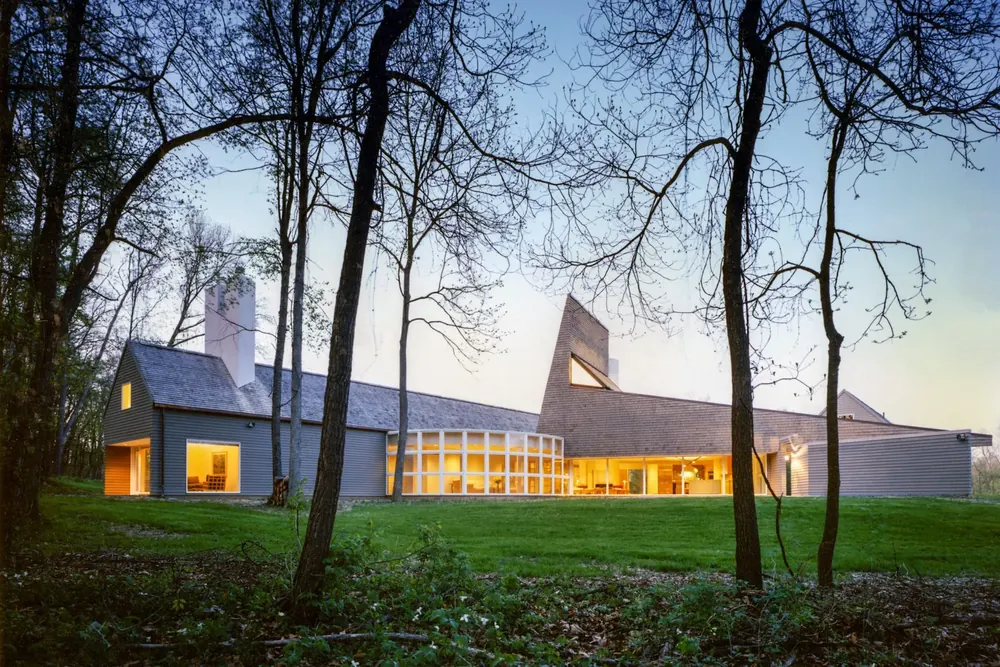
Working across Southeast Michigan: Ann Arbor, Saline, Canton, Brighton, Dexter, Milan and more. Residential, commercial, institutional and industrial.
One builder, from the foundation to a stuck door.
General contracting, design and construction management, for homes and for commercial buildings. Most of the Perkins crew has worked with the company for years.

New construction
Building from the ground up, homes and commercial buildings, from the first design meeting to the final walk-through.
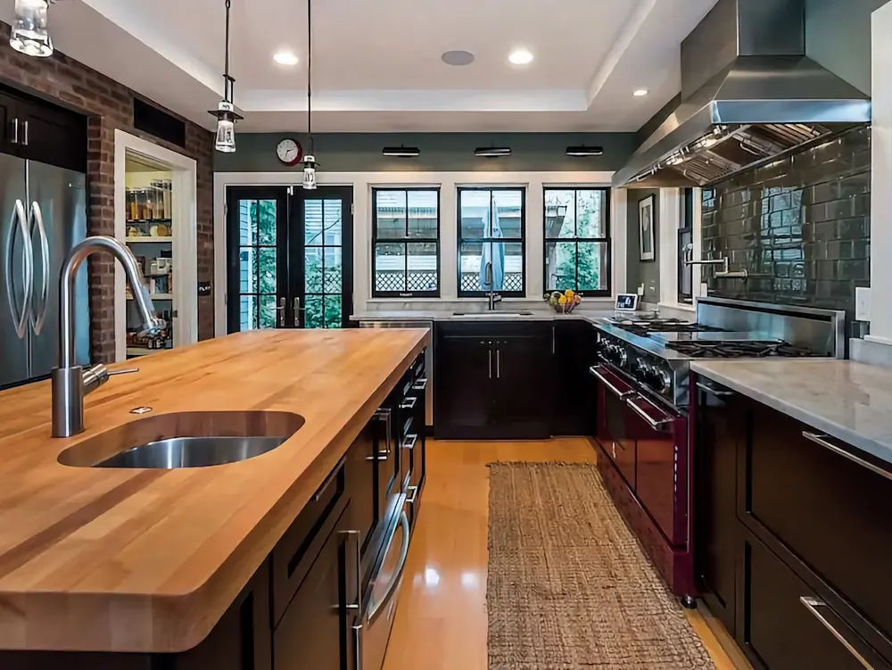
Remodeling and additions
Additions and renovations that blend with the house you already have.
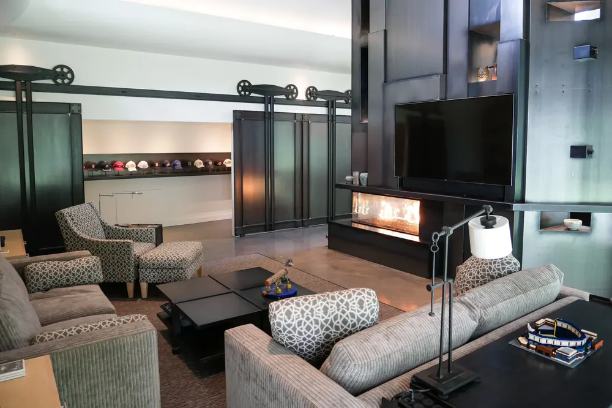
Design
Space planning, material selection and 3D models before anything is built.
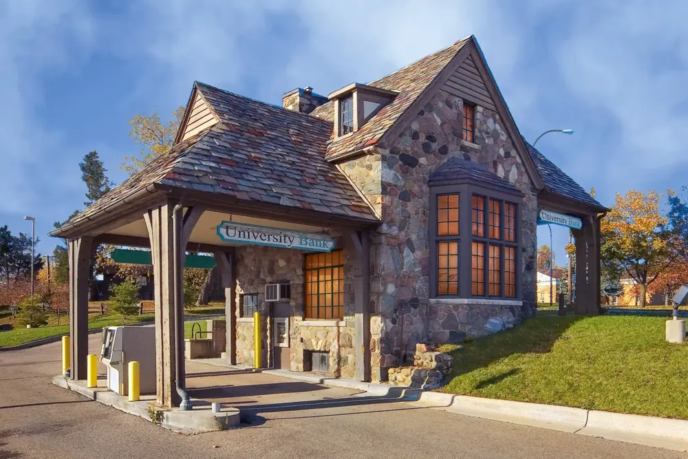
Historic preservation
Old buildings adapted to new uses, with their character kept.
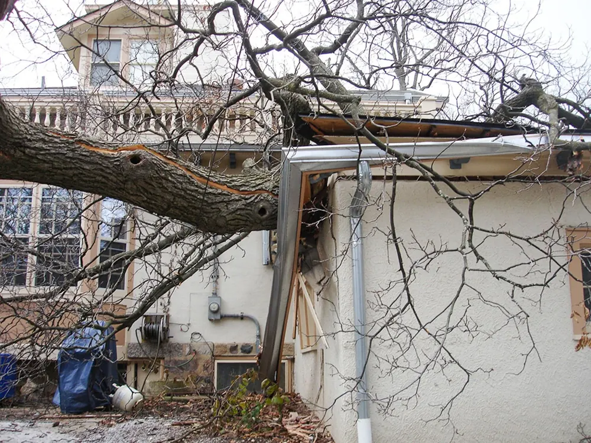
Maintenance and repairs
From a stuck door to kitchen updates to facility repair.
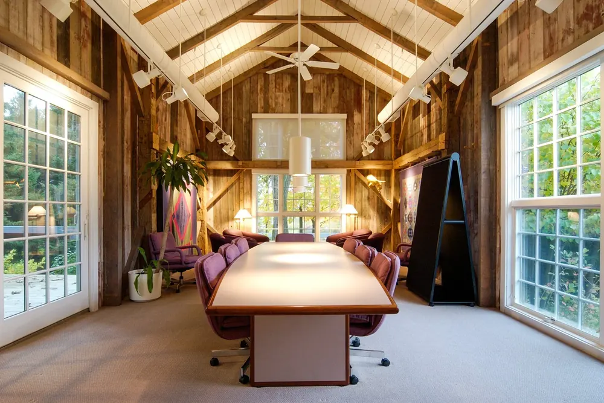
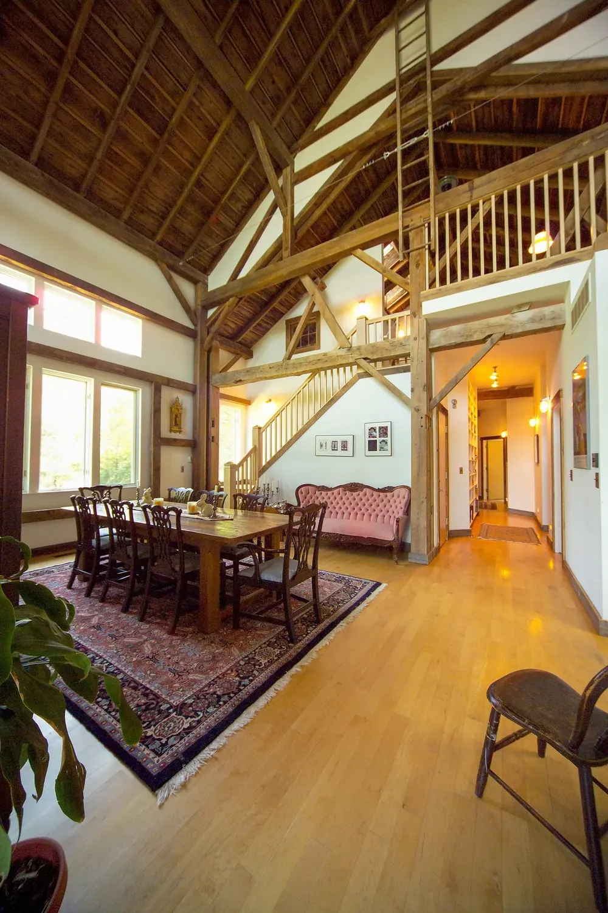
Old buildings, new uses.
When a building has outlived its purpose, Perkins adapts it to today's needs and keeps its charm. Four buildings from their own preservation page:
- 1886A railroad stationGets a new dining room.
- 1928A gas stationBecomes a banking facility.
- 1950sA lumberyard buildingBecomes the Perkins offices.
- TodayA house from the fortiesThe Perkins office, in the Village of Dixboro.
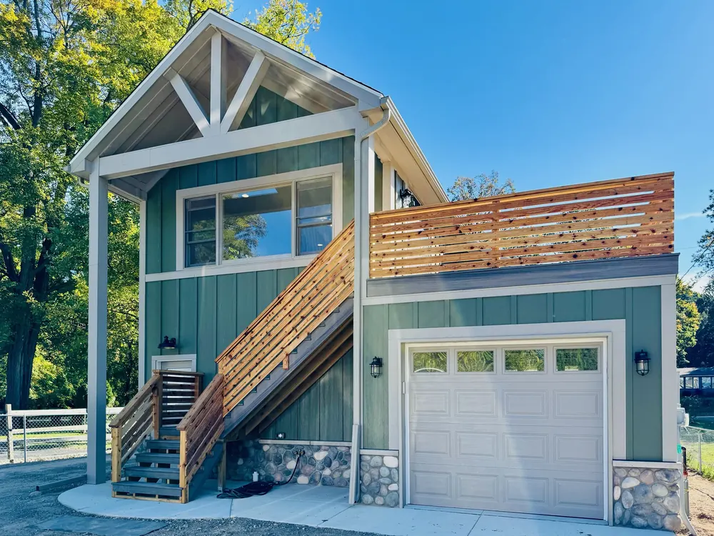
Lakeside Garage and Office
One of their recently completed projects. After moving to remote work, this homeowner wanted an office that wouldn't keep them from life on the lake: sun, glimpses of the water, and a deck to step out on between calls.
Below it, room for a pontoon boat and a vintage Cadillac.
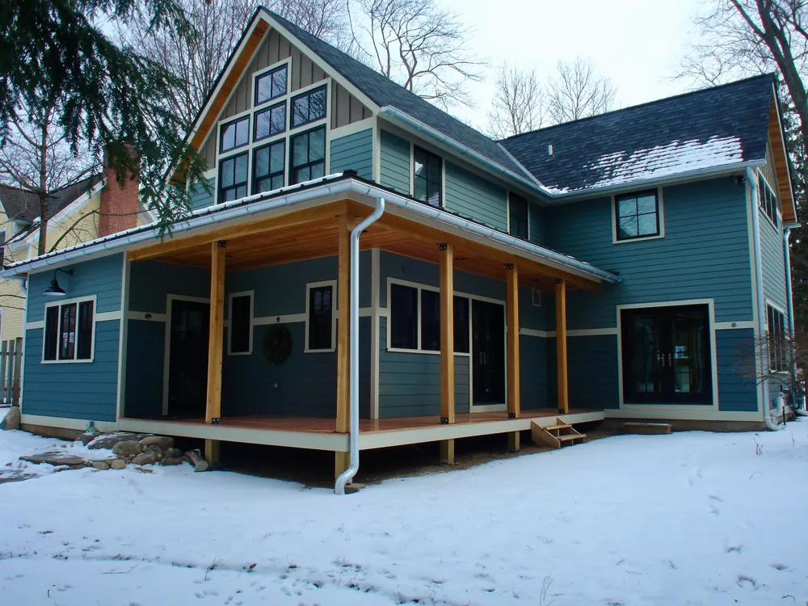
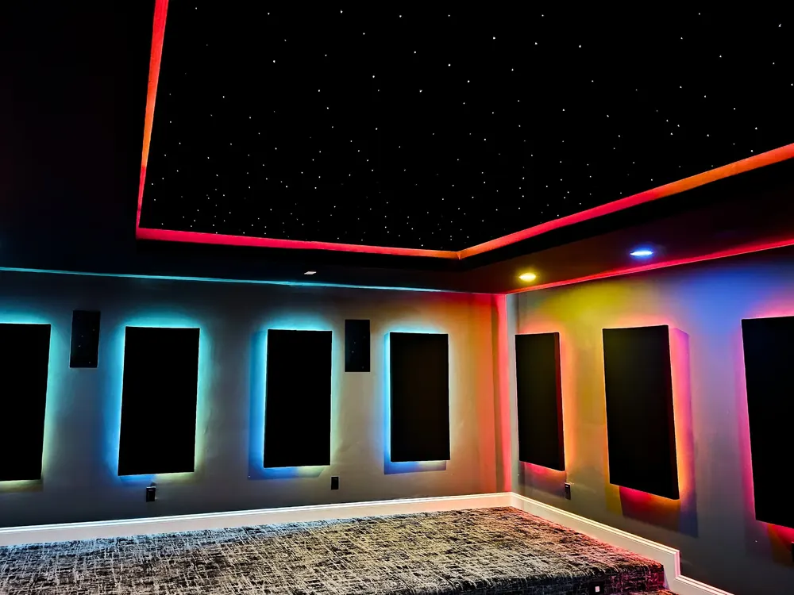
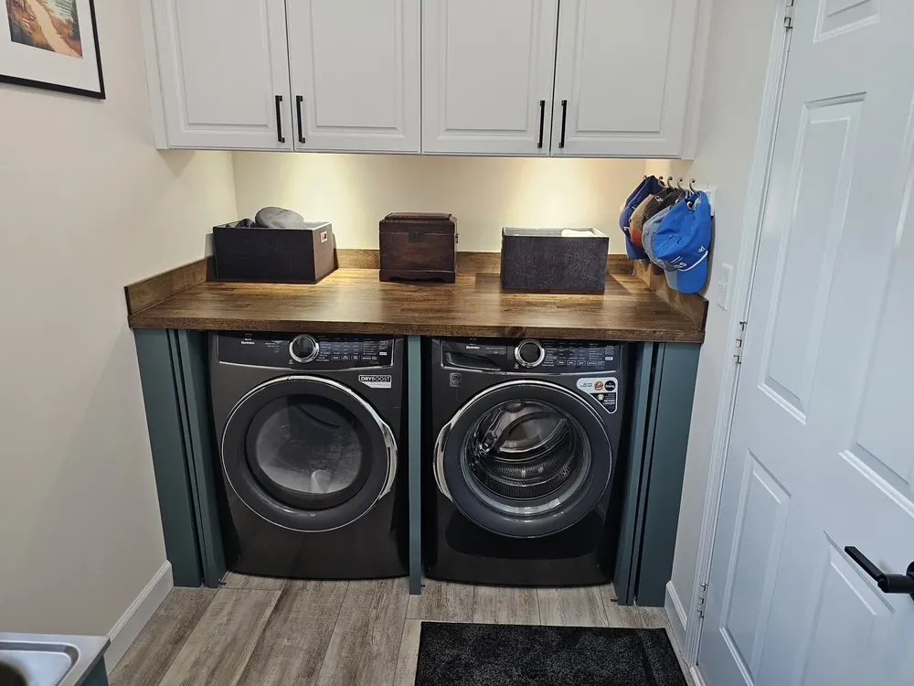
What clients say
From the testimonials on the Perkins website. Read all of them.
“We interviewed two other construction companies and were most impressed by the attention to detail from Joe. Perkins makes renovation painless.”
“Your guys are terrific. They are always happy to show me what they're doing and explain what is going on.”
“I have had decades of experience hiring contractors in Ann Arbor and I am very happy with Perkins Construction. They are reasonable, organized, and get things done!”
How a project starts
It's never too early to call. Perkins can help before you have chosen an architect, or before you know whether you need one.
Call the office
A phone call almost always leads to a first meeting.
Meet for about an hour
Face to face, to learn about your project and for you to get to know the team.
Get a fee structure and schedule
A proposal from pre-construction through completion, at no charge.
Who you'll deal with
- Geoff PerkinsCEO. Founded the company in 1984.
- Carl WursterVice President and Director of Construction. With Perkins since 1988.
- Angela Say-CraigTreasurer and COO. With Perkins since 1997.
Who will be working on my project?
The laborers and carpenters in your home are on the Perkins payroll, handpicked, and many have been with the company a long time. Subcontractors are handpicked too, for their reliability.
Will I have to move out during a renovation?
For a major renovation it's better if you can: construction is dirty and noisy. If you stay, and many people do, Perkins puts up temporary protection, dust barriers and filters on registers. In their words: we'll look out for your kids, and even take care of your dog.
When will I know what it will cost?
A firm price comes once drawings and specifications are complete. Before that, Perkins forecasts costs and helps you set a realistic budget, and the earlier they are involved, the better that forecast.
Tell us about your project.
A phone call to the office almost always leads to a first meeting, about an hour, face to face. Then you get a proposed fee structure and schedule, at no charge.